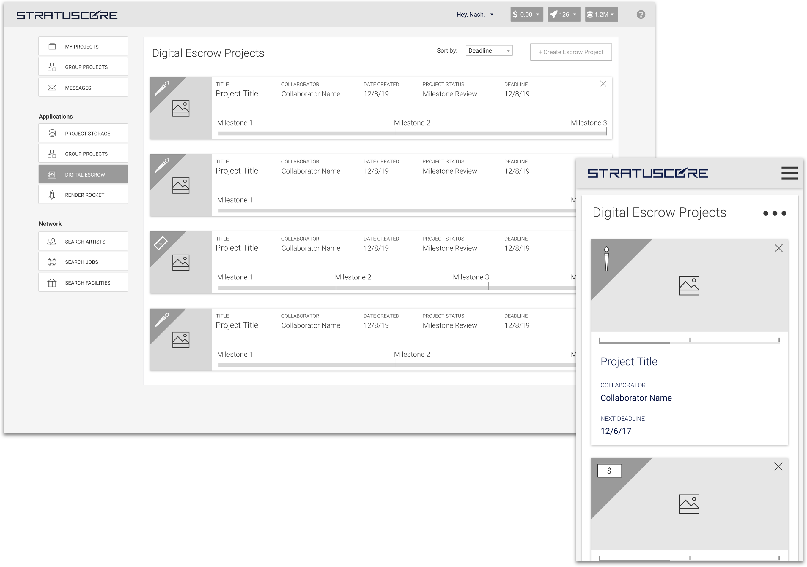
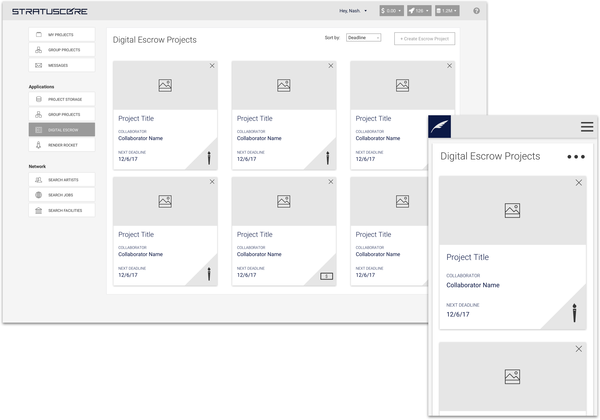
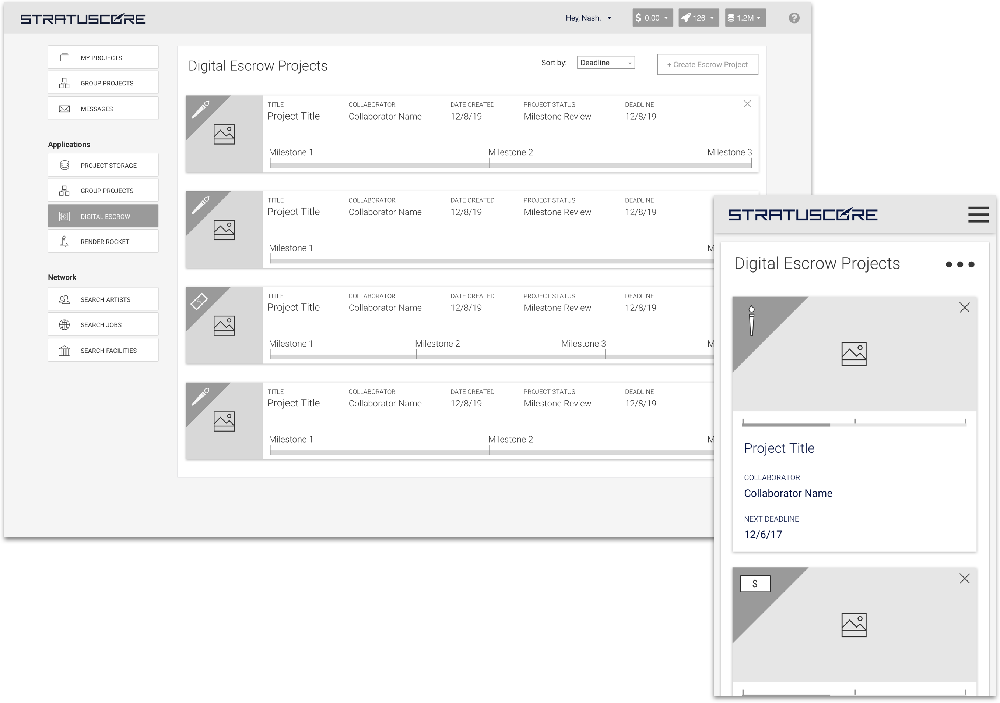
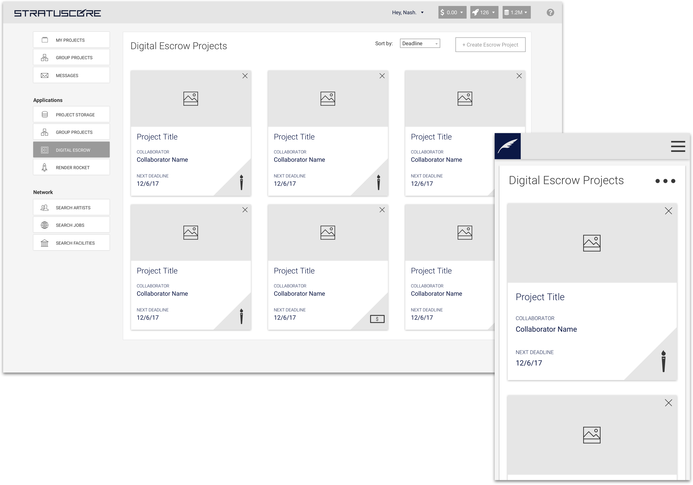

Role: Lead UX & UI Designer, Front-End-Developer
Developers: Paul Murray, Amir Rosenblatt, David D'Andrea
Tools: Adobe XD, Illustrator, Sketch, Marvel, Pen & Paper
Languages: HTML, CSS, Javascript, PHP
Project Completed: Ongoing, beta can be found here.
Stratuscore is a software as as service platform that helps move 3D content creation towards being a more collaborative and community driven experience. We are building a portal for VFX artists to find a network, collaborate on projects, and facilitate client relationships. Digital Escrow is the solution to the pain points of managing a typical client relationship in the context of a project. Digital escrow allows a user to create and work on a project while knowing that payment for the work is available and ready to be released on project completion.
#0b1745
#12e896
#436ffd
#f57d78
#417AF9
#2AEAD8
#436ffd
#f57d78
One of the major paint points of a client-content creator relationship is facilitating payment for creative work. Digital Escrow is a product that hopes to solve a few of these awkward scenarios. The Digital Escrow workflow is essentially a locked promise between two players with Stratuscore as the agent and facilitator of the agreement. No project is initalized without the guarantee and stowage of payment. This is empowering to both the buyer of the content and the artist. Either party is able to set up a project, declare the value, set deadlines, and describe deliverables. No payment is released until a buyer agrees a deliverable has been met, and no assets are released until a payment has been procured. It’s a seamless and confluent answer to the clunky experience of the exchange of work for pay.

The first impression of any experience is the gateway for what the user expects, and I wanted to make the Digital Escrow project page as informative as I could without overwhelming our user with information. With our current architecture I knew I had to create a spectrum of options and solutions. We absolutely needed an MVP product and it needed to be the simplest form of our idea in order to make our swift deadline. I wanted to iterate, but I wanted the iterations to be thoughtful evolutions of eachother, to present almost a roadmap of where the product could evolve as the architecture around our platform evolves.
 



Stratuscore is a startup and a lean UX workflow is critical to our success. The Digital Escrow team is a slim group of three back-end developers and one designer. I came into this project with a deeper knowledge of HTML and CSS, but have since had to rapidly improve my Javascript skills on the fly. It's been an incredible challenge, but extremely rewarding. I strive for a holistic understanding of process, and gaining a deeper knowledge of development is very important.
At Stratuscore we have aggressive timelines in order to ship ASAP, gain feedback, and iterate often. Since we are a small team we can pivot very quickly, and synthesizing user feedback and acting on it is closely tied to our success.
Digital Escrow is an evolving product, currently in it's Beta form with plans on a big reveal at the Siggraph conference.